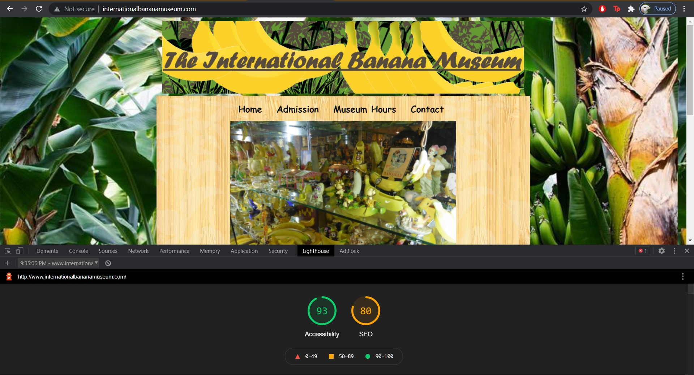
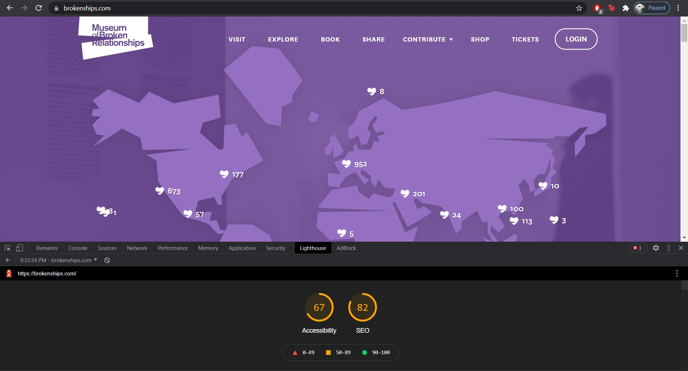
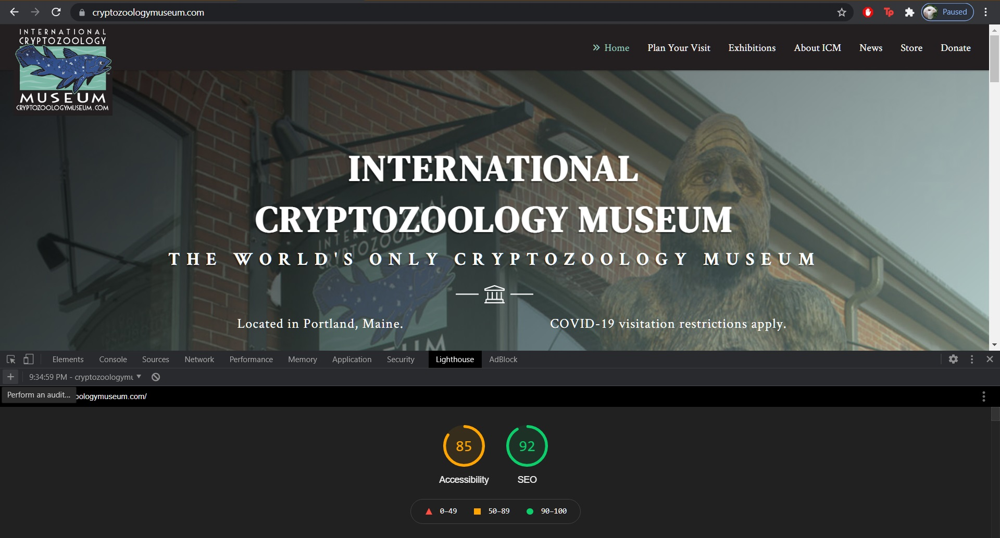
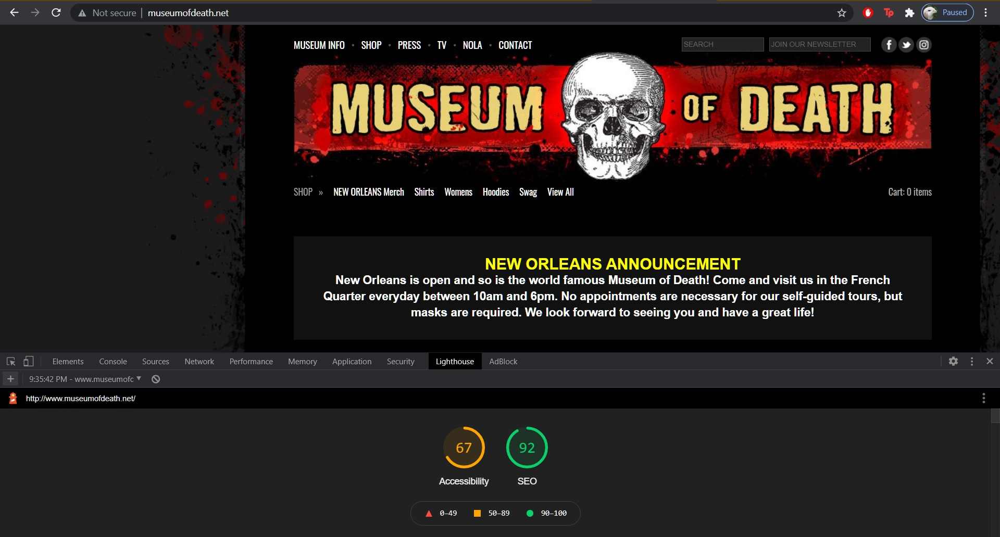
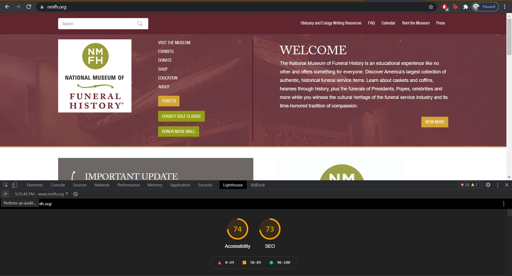

Unusual Museums and their Accessibility
DH150 Summer 2021
Assignment01
By: Labiba Alam

Ways to improve their scores:
- They can add a < meta name="viewport"> tag to optimize their website for mobile screens
- They could add a meta description which might be included in search results to concisely summarize page content.

Ways to improve their scores:
- They can increase the contrast ratio between the background and foreground colors.
- Their image elements could have alternate text for screen readers.

Ways to improve their scores:
- They can organize their heading elements in a sequentially-descending order to make it easier for screen readers.
- They can add a [lang] attribute so screen readers understand whether or not the page is in its default language.

Ways to improve their scores:
- They can add labels to their form elements to ensure that the form controls are announced properly by screen readers.
- They can enable zooming for people with visual impairments.

Ways to improve their scores:
- They can add descriptive link text which would help search engines understand their content.
- They can add crawlable links to ensure that the `href` attribute of anchor elements links to an appropriate destination, so more pages of the site can be discovered.